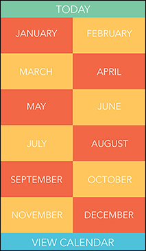
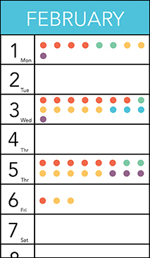
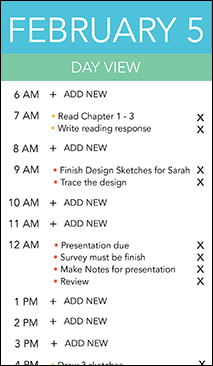

CSO is a Note and Calendar Application. It allows you to sort out your events or schedules into categories of the choice into folder names and colors. You would be able to view your schedules into many different sections of folder view, day view and dotted view, where it can help you be able to remmeber your shcedules by color coding it in the dots. Try out the start demo and also check out the example demo to see the app in used.